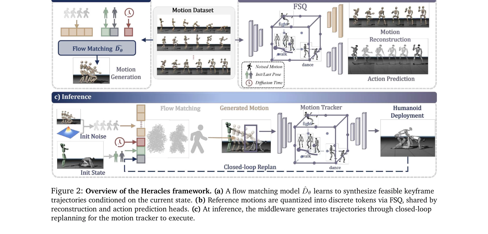

Essence

Figure 1: Heracles synthesizes diverse, anthropomorphic recovery motions via state-conditioned diffusion. In
Heracles는 state-conditioned diffusion 미들웨어를 통해 정밀한 모션 추적과 생성적 적응을 통합하여 휴머노이드 로봇이 극단적인 외부 교란 상황에서도 자연스러운 복구 동작을 수행하도록 한다.
저자: Zelin Tao, Zeran Su, Peiran Liu, Jingkai Sun, Wenqiang Que, Jiahao Ma, Jialin Yu, Jiahang Cao, Pihai Sun, Hao Liang, Gang Han, Wen Zhao, Zhiyuan Xu, Jian Tang, Qiang Zhang, Yijie Guo | 날짜: 2026-03-31 | DOI: 10.48550/arXiv.2603.27756
Figure 1: Heracles synthesizes diverse, anthropomorphic recovery motions via state-conditioned diffusion. In
Heracles는 state-conditioned diffusion 미들웨어를 통해 정밀한 모션 추적과 생성적 적응을 통합하여 휴머노이드 로봇이 극단적인 외부 교란 상황에서도 자연스러운 복구 동작을 수행하도록 한다.
Figure 1: Heracles synthesizes diverse, anthropomorphic recovery motions via state-conditioned diffusion. In

Figure 2: Overview of the Heracles framework. (a) A flow matching model ^𝐷𝜃learns to synthesize feasible keyframe
총평: Heracles는 state-conditioned diffusion을 활용한 혁신적인 제어 미들웨어를 제시하여 휴머노이드 로봇의 정밀 추적과 생성적 적응성의 오래된 딜레마를 우아하게 해결하며, 물리적 로봇 실험을 통한 강건한 성능 검증으로 실질적 가치를 입증한다.